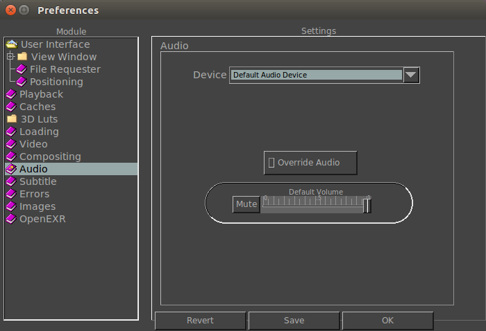

|  |
Here you can change the default driver when the viewer starts. By default, and for now, the only driver is ALSA on Linux and WAVE on Windows. Here you can set the output device for the audio. By default, the default device is used. Here you can set the default audio volume when mrViewer begins. Or you can "Mute" sound completely. |